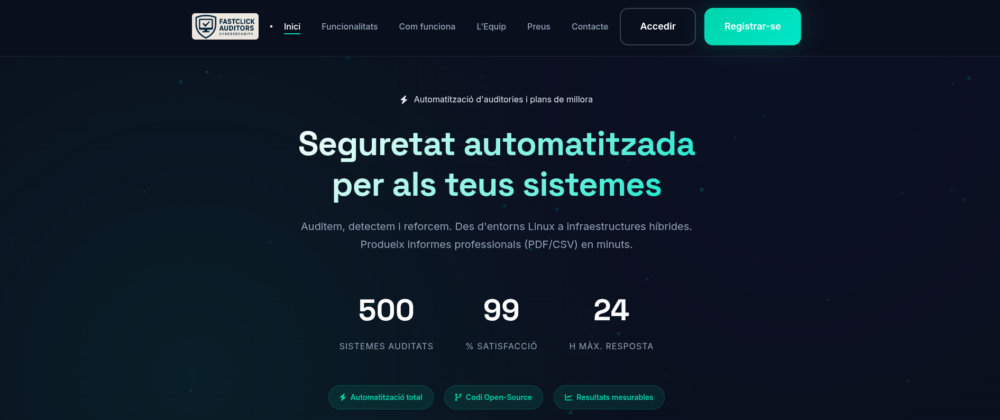
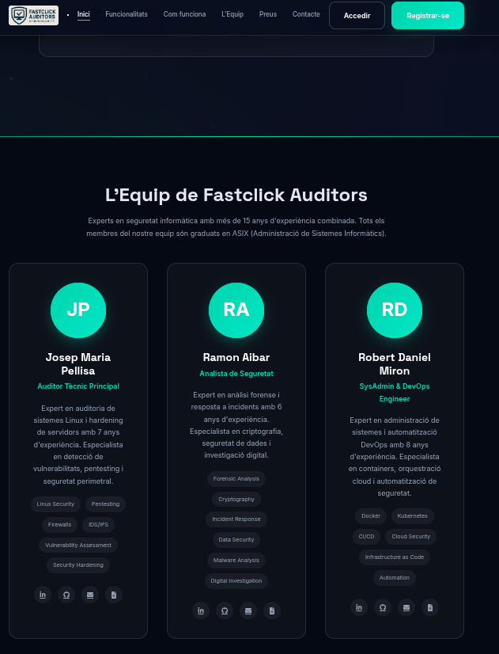
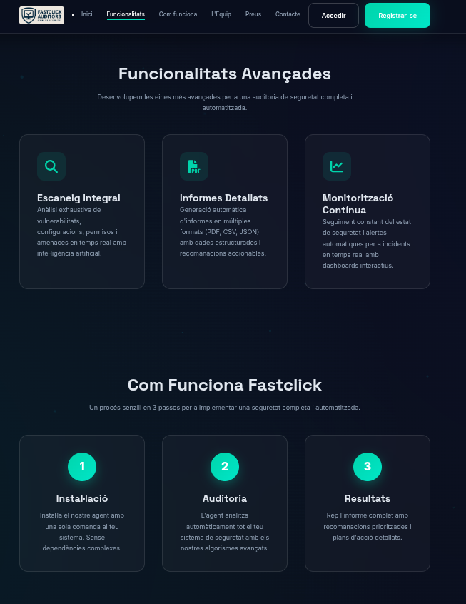
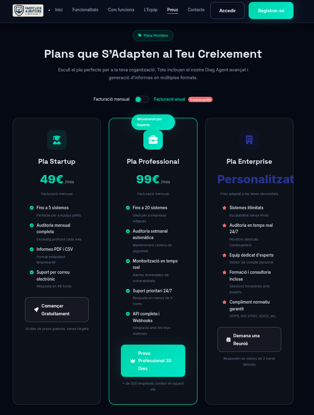
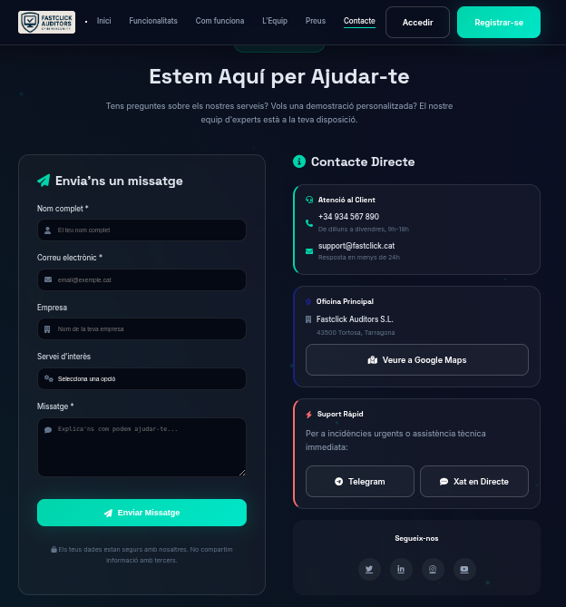
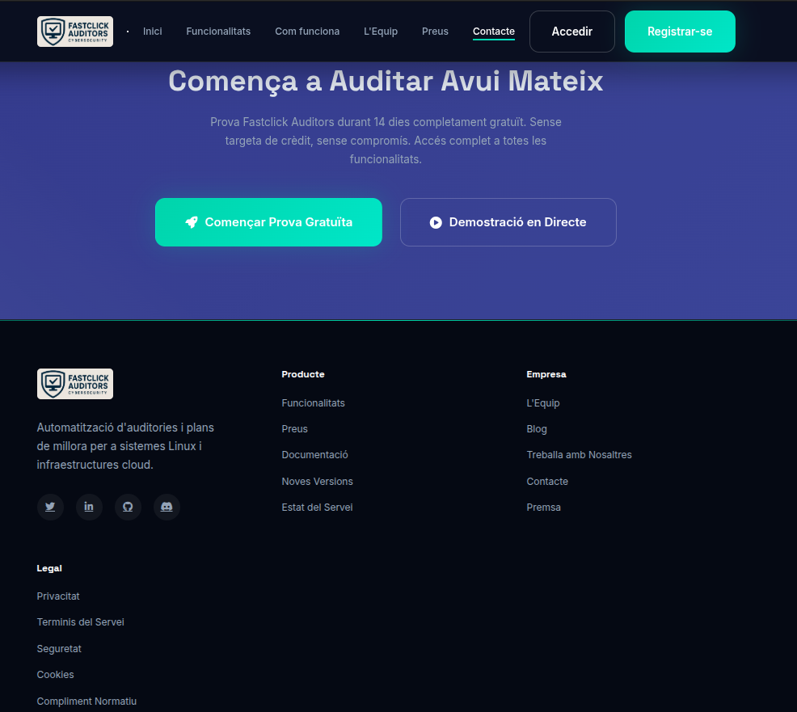

5. Landing Page (Marketing)
Aquest apartat detalla el procés de creació, disseny i implementació tècnica de la Landing Page del projecte. S'ha desenvolupat una pàgina web completa ("One Page") per promocionar els serveis de l'auditoria, explicada punt per punt a continuació.
5.1. Disseny Global i Estètica
Abans de desenvolupar les seccions, s'ha definit una línia visual professional basada en el concepte "Dark Mode Premium":
* Aparença: Fons foscos (#0a0f1e) per transmetre sofisticació i reduir la fatiga visual.
* Colors Coherents: S'han definit Variables CSS (:root) per mantenir la consistència: Verd Maragda (#00d4aa) per a elements d'acció i Blau (#1a237e) per a fons secundaris.
* Tipografia: Ús de Space Grotesk per a títols (estil tècnic) i Inter per a textos llargs (llegibilitat).
5.2. Desenvolupament Punt per Punt
5.2.1. Navegació (Navbar)
Hem implementat una barra de navegació fixa a la part superior per facilitar l'accés ràpid a qualsevol part de la web.
* Efecte Vidre (Glassmorphism): S'ha aplicat backdrop-filter: blur(20px) perquè el fons es difumini en fer scroll.
* Interactivitat: Mitjançant JavaScript, la barra canvia d'estil (es fa més opaca) quan l'usuari baixa per la pàgina.
* Versió Mòbil: S'ha programat un menú "hamburguesa" que es desplega verticalment en pantalles petites.
5.2.2. Secció Hero (Pantalla Principal)
La primera impressió és clau. Aquí hem integrat:
* Fons de Partícules: Un script personalitzat (createParticles) genera punts que floten i es mouen aleatòriament, simulant una xarxa de dades viva.
* Animacions d'Entrada: Els títols i textos apareixen suaument des de baix (fadeInUp) per captar l'atenció.
* Comptadors Dinàmics: Tres números grans (Auditories, Satisfacció...) que pugen de 0 fins a la xifra final automàticament quan apareixen en pantalla.

5.2.3. Stack Tecnològic
Hem creat una graella visual per mostrar les tecnologies que auditem (Linux, Docker, Python...).
* Efecte Hover: En passar el ratolí per sobre, cada targeta s'il·lumina i s'eleva lleugerament (transform: translateY), donant feedback a l'usuari.
5.2.4. L'Equip
Per generar confiança, hem mostrat els perfils dels auditors.
* Targetes de Perfil: Disseny net amb la foto/inicials, càrrec i una llista d'habilitats (tags).
* Bordes Animats: Les fotos tenen un anell giratori suau fet amb CSS @keyframes per donar dinamisme.

5.2.5. Funcionalitats i Procés
Explicació dels serveis mitjançant icones i textos curts.
* Maquetació Grid: Ús de display: grid per assegurar que les targetes s'alineïn perfectament i s'adaptin a 1, 2 o 3 columnes segons la pantalla.

5.2.6. Plans de Preus (Pricing)
Una de les parts més complexes tècnicament. * Interruptor Mensual/Anual: Hem programat un toggle switch en JavaScript. En activar-lo, els preus canvien instantàniament a la versió anual i apareixen etiquetes de "Descompte". * Targeta Destacada: El pla "Professional" és més gran i té una vora de color per atreure l'atenció (Nudge Theory). * Taula Comparativa: Una taula detallada al final per als usuaris que necessiten veure totes les especificacions tècniques.

5.2.7. Formulari de Contacte i Validació
No és un formulari estàtic; té lògica de validació en el navegador (Client-Side). * Validació en Temps Real: Si l'usuari escriu un correu malament o deixa un camp buit, la vora del camp es posa vermella i apareix un missatge d'error. * Feedback Visual: Si s'intenta enviar el formulari amb errors, el botó fa una animació de "sacsejada" (shake) per avisar l'usuari. * Simulació d'Enviament: En clicar "Enviar", el botó mostra un spinner de càrrega i, després d'uns segons, apareix una finestra modal confirmant l'èxit.

5.2.8. Peu de Pàgina (Footer)
Inclou enllaços legals, mapes del lloc i xarxes socials, amb un script que actualitza automàticament l'any del copyright.

5.3. Aspectes Tècnics Transversals
Optimització de Rendiment (Performance)
Per garantir que la pàgina carregui ràpid: * S'ha utilitzat Intersection Observer API: Les animacions i imatges només es carreguen/activen quan l'usuari fa scroll fins a elles, estalviant recursos del navegador. * Codi net sense llibreries externes pesades (tot és Vanilla JS i CSS natiu).
Adaptabilitat (Responsive Design)
La pàgina es veu bé en mòbils, tauletes i ordinadors. * S'han utilitzat Media Queries per reajustar les mides de lletra i la disposició de les columnes (passant d'horitzontal a vertical) en pantalles petites.